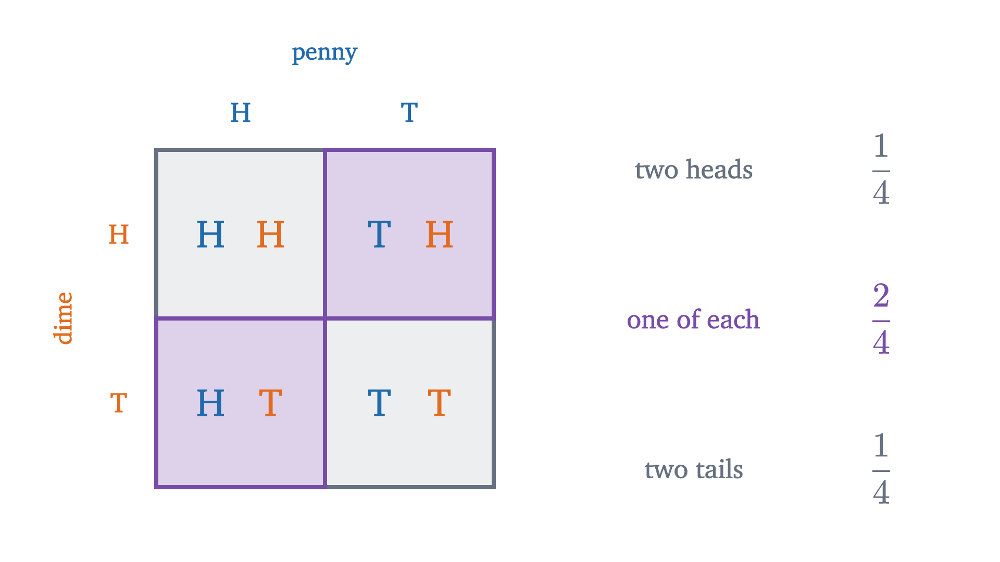
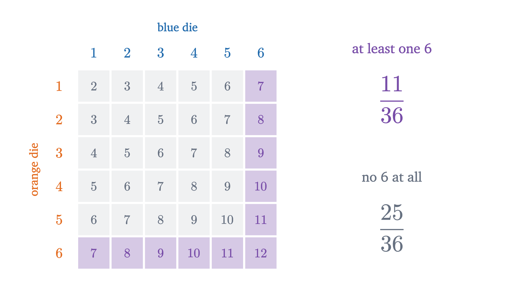
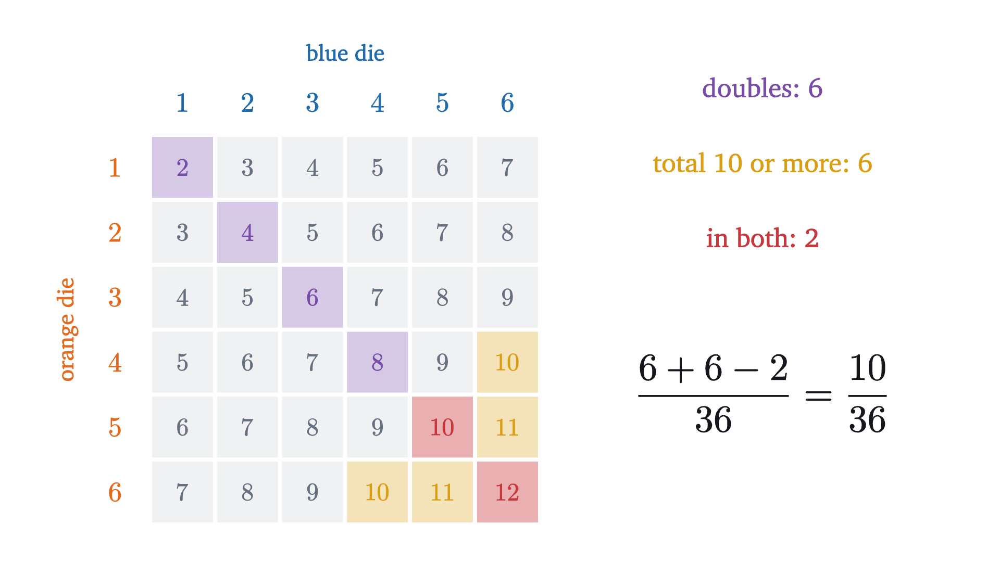

What probability means: counting equally likely outcomes
Is a total of 7 with two dice three times as likely as a 12, or six times? Settling it leads to sample spaces, events and the rules every probability obeys.
Roll two dice and add them up. Everyone who has played a board game knows that a total of 7 comes up more often than a total of 12. The harder question is how much more often, and two reasonable people can count their way to two different answers.
The first person says: a 12 can only happen as a 6 and a 6. A 7 can happen as 1 and 6, as 2 and 5, or as 3 and 4. That is three ways against one, so a 7 is three times as likely as a 12.
The second person says: the two dice are different objects. “A 1 and a 6” is really two things that can happen, because either die can be the one that shows the 1. Counted that way a 7 can happen in six ways and a 12 still in only one, so a 7 is six times as likely.
Both people counted correctly. They disagree about what to count, and no amount of arithmetic will decide between them. Deciding takes an idea about what a probability is, and by the end of this lesson we will have that idea in the exact form mathematicians use.
The same dispute with two coins
Dice have six faces, which makes for a lot of cases. The same disagreement already shows up with the simplest random objects there are, so we settle it there first.
Flip two coins. The first person lists three things that can happen: two heads, two tails, or one of each. Three possibilities, so each should happen a third of the time. The second person says “one of each” is two possibilities, since either coin can be the head, so there are four possibilities and “one of each” should happen half the time.
Pause and try
Before looking at the figure below, decide which you believe: does “one of each” happen about a third of the time or about half the time? If you have two coins in reach, flip the pair twenty times and tally the three results.
Show answerHide answer
About half. In twenty real flips expect “one of each” around 10 times, with two heads and two tails around 5 each, give or take a few.
We can ask the coins. The figure flips a simulated pair 400 times and keeps a tally.
In this run of 400 pairs, “one of each” came up 201 times, two tails 103 times and two heads 96 times. The three-way split predicted about 133 for each. The four-way count predicted 200, 100 and 100. The coins side with the second person.
To see why, make the two coins impossible to confuse. Say one is a penny and the other is a dime. Then there is no doubt that “penny heads, dime tails” and “penny tails, dime heads” are different things that can happen: if you photographed the table, the two photographs would differ. Listing what each coin does separately gives a table with four cells.

Now ask which list consists of things that are equally likely. For the four cells there is a reason to believe it. The penny is fair, so its two columns each get half of all flips. The dime does not know what the penny did, so within each column its two rows split the flips evenly again. Half of a half is a quarter, for every cell. For the list of three there is no such argument, and the table shows why it fails: “one of each” is two cells, and the other two results are one cell apiece.
So the first person’s list was a perfectly good list of what can happen. The error was the unspoken step from “there are three possibilities” to “each has chance one third”. Counting possibilities gives probabilities only when the possibilities are equally likely, and whether they are is a fact about the coins, not about the list.
Thirty-six outcomes for two dice
The dice dispute is the same dispute. Take one blue die and one orange die, so that “blue 1, orange 6” and “blue 6, orange 1” are visibly different. Each die has six faces. By the argument we used for the coins, every pairing of a blue face with an orange face is as likely as every other: the blue die is fair, so each column of the table below gets a sixth of the rolls, and the orange die splits each column into six equal parts. That gives $6 \times 6 = 36$ equally likely pairs.
Pause and try
Use the grid to count the cells with a total of 8. Then answer the opening question: how many times as likely is a 7 as a 12?
Show answerHide answer
A total of 8 is the diagonal $(2,6), (3,5), (4,4), (5,3), (6,2)$: five cells, so its probability is $5/36$. A 7 has six cells and a 12 has one, so a 7 is six times as likely as a 12. Note that $(4,4)$ is a single cell. A double is the one kind of pair that has no mirror image, and this is exactly why 12 loses to 7 by a factor of six and not three.
The last remark in that answer explains what the first person got wrong in a way that goes beyond “you forgot the order”. Carried through for every total, the first person’s method lists unordered pairs of faces, and there are 21 of them: six doubles and fifteen pairs of two different numbers. The six doubles are each one cell of the grid, while each of the fifteen mixed pairs is two cells ($6 + 2 \times 15 = 36$). So the 21 items on that list are not equally likely: a mixed pair such as “a 3 and a 4” has twice the chance of a double such as “a 6 and a 6”.
Asking the dice
An argument that the 36 cells are equally likely is still only an argument, so we check it against rolls as we did for the coins. The figure rolls a simulated pair of dice 3600 times. For each total it marks two predictions: the green mark is the number of cells divided by 36, and the red mark is the first person’s count of unordered pairs divided by 21.
Early on, the bars jump around and prove nothing. By a few thousand rolls they have settled, and they have settled on the green marks. In this run a total of 7 came up 596 times in 3600 and a total of 12 came up 101 times. The ordered count predicts 600 and 100. The unordered count predicts about 514 and 171, which is far outside anything the dice produced.
Sample spaces, events and probability
We have now done the same three things twice, and each has a name.
First we wrote down every way the experiment could come out, at a level of detail fine enough that the items were equally likely: four penny and dime results, 36 blue and orange pairs. Each item is an outcome, and the set of all of them is the sample space.
Second, we took the thing we cared about (“the total is 7”) and identified it with the set of outcomes in which it happens (a diagonal of six cells). Such a set is an event.
Third, we divided: six cells out of 36.
Each clause is something we met. “Exactly one of which occurs” is what makes the list a legitimate sample space: the outcomes must not overlap and must not leave anything out. The three-item coin list passes that test, and so does the four-item list. “Equally likely” is the hypothesis that licenses the formula, and it is the one that separated the two lists. The definition does not tell you whether it holds. That has to come from a physical argument (a symmetric die, coins that do not influence each other) or from data.
For two dice, $\Omega = \{(a, b) : a, b \in \{1, 2, \dots, 6\}\}$, with $|\Omega| = 36$. The event “the total is 7” is $A = \{(1,6), (2,5), (3,4), (4,3), (5,2), (6,1)\}$, and $P(A) = 6/36 = 1/6$.
Because an event is a set, a question about probability becomes a question about a region of the grid. Here is one where the picture prevents a mistake.
Pause and try
Two dice are rolled. What is the probability that at least one of them shows a 6? Many people reason: “the chance of a 6 on the blue die is $1/6$, the chance on the orange die is $1/6$, so the answer is $1/6 + 1/6 = 1/3$.” Count cells in the grid and decide whether that is right.
Show answerHide answer
The event is the blue-6 column together with the orange-6 row. Each has 6 cells, but they share the corner cell $(6, 6)$, so the region has $6 + 6 - 1 = 11$ cells and the probability is $11/36$, a little less than $1/3 = 12/36$. Adding the two sixths counts the double six twice.

The picture also shows a quicker route to 11. The cells with no 6 form a block with five columns and five rows, 25 cells, and every cell is in the block or in the event but not both. So the event has $36 - 25 = 11$ cells.
Two rules that follow from counting
Both observations about that figure are general, and they are the two rules used most in practice.
For an event $A$, its complement $A^c$ is the set of outcomes not in $A$: the event that $A$ does not occur. The union $A \cup B$ is the set of outcomes in $A$ or in $B$ or in both, the event that at least one of the two occurs. The intersection $A \cap B$ is the set of outcomes in both, the event that both occur. Two events are disjoint when $A \cap B$ is empty, meaning they cannot occur together.
In the equally likely setting both rules are statements about counting. Every outcome lies in exactly one of $A$ and $A^c$, so $|A| + |A^c| = |\Omega|$, and dividing by $|\Omega|$ gives the complement rule
For a union, add $|A|$ and $|B|$. An outcome in exactly one of the two sets has been counted once, and an outcome in both has been counted twice, so subtracting $|A \cap B|$ leaves each outcome of $A \cup B$ counted exactly once. Dividing by $|\Omega|$ gives the addition rule
which for disjoint events reduces to $P(A \cup B) = P(A) + P(B)$. The “at least one 6” computation used both: it is $\frac{6}{36} + \frac{6}{36} - \frac{1}{36}$ by the addition rule and $1 - \frac{25}{36}$ by the complement rule. Here is a second instance, with a larger overlap.

When outcomes are not equally likely
The definition so far covers fair coins, fair dice and shuffled cards, and it has an obvious limit: it says nothing when the outcomes are not equally likely. We do not have to look far for an example. Suppose all you record is the total of the two dice. Then the possible results are the eleven numbers $2, 3, \dots, 12$, exactly one of which occurs, so $\{2, 3, \dots, 12\}$ is a legitimate sample space. Its outcomes are far from equally likely: 7 has probability $6/36$ and 12 has $1/36$. For such a space, “count and divide” is the wrong recipe.
The repair is to give each outcome its own weight. For a finite sample space $\Omega$, assign to each outcome $\omega$ a number $p(\omega) \ge 0$, with the weights adding up to 1, and define the probability of an event as the total weight of its outcomes:
Equally likely outcomes are the special case in which every weight is $1/|\Omega|$, and then the sum is $|A|/|\Omega|$ as before. For the totals of two dice the weights are $\frac{1}{36}, \frac{2}{36}, \dots, \frac{6}{36}, \dots, \frac{1}{36}$, which are the bar heights from the grid figure.
In 1933 Andrey Kolmogorov proposed taking three properties that all such assignments share as the definition of probability, and that definition is the one in use today.
The weighted sum above satisfies all three: a sum of nonnegative weights is nonnegative, the weights total 1, and the outcomes of two disjoint events are summed separately with none shared. Conversely, on a finite space any $P$ satisfying the axioms comes from weights, namely $p(\omega) = P(\{\omega\})$, because additivity lets you build any event up one outcome at a time. (For infinite sample spaces axiom 3 is strengthened to cover infinite sequences of disjoint events. We will not need that here.)
The axioms say nothing about where the numbers come from: symmetry, data and judgment are all acceptable sources. They guarantee that, whatever the source, the rules we found by counting still hold.
Each step is one of the counting steps from the last section with “number of outcomes” replaced by “probability”. That is the sense in which the axioms capture what counting was doing.
What the number means
One question has been waiting since the coin simulation. We say a total of 7 has probability $1/6$. The next roll will either be a 7 or it will not. What does the number $1/6$ say about the world?
The answer most people use, and the one our simulations relied on, is about repetition: if the experiment is run many times under the same conditions, the fraction of runs in which the event occurs will be close to its probability, and closer the more runs there are.
That the fractions behave this way is a theorem, the law of large numbers, first proved by Jacob Bernoulli, in a book published in 1713, for exactly this kind of repeated experiment. We are citing it here and not proving it; the lesson on the law of large numbers does. Two cautions belong with it even now. It is a statement about fractions over a long run, and it promises nothing about any single roll or any short streak. And the dice have no memory: the fraction settles because a few thousand new rolls outweigh whatever happened early, with no tendency for later rolls to make up for earlier ones.
Worked examples
Common mistakes
Stepping back
The calculations here were easy. Both people in the opening counted correctly, and what separated them was a hypothesis that neither had said aloud. Making that hypothesis explicit is what the sample space is for: you are forced to say what the outcomes are, and then to defend the claim that they are equally likely, or else to supply weights.
Once that is done, probability questions about dice, coins and cards become questions about counting regions, and the two rules for regions (complement and addition) carry over unchanged to any probability measure. The next lesson asks what happens to these numbers when you learn something partway through, for example that the blue die has already come up 6.
Check yourself
Two fair dice are rolled. What is the probability that the total is 4?
Problems
Draw the grid for the dice problems. The first two repeat the lesson’s moves, the next three combine them, and the last two go a step further.
Problem 1
Two fair dice are rolled. Find the probability that the total is 5, and the probability that the total is at least 11.
Show solutionHide solution
Use the 36 equally likely ordered pairs. A total of 5 occurs in $(1,4), (2,3), (3,2), (4,1)$, four cells, so the probability is $4/36 = 1/9$. A total of at least 11 means 11 or 12: the cells $(5,6), (6,5), (6,6)$, three in all, so the probability is $3/36 = 1/12$.
Problem 2
Three fair coins are flipped. Find the probability of at least one head. Do it twice: by listing, and with the complement rule.
Show solutionHide solution
The sample space has 8 equally likely outcomes: $HHH, HHT, HTH, THH, HTT, THT, TTH, TTT$. Listing: every outcome except $TTT$ contains a head, so 7 outcomes, probability $7/8$. Complement: “at least one head” is the complement of “no heads”, which is the single outcome $TTT$ with probability $1/8$. So the answer is $1 - 1/8 = 7/8$.
Problem 3
Two fair dice are rolled. Find the probability that the total is even or greater than 8.
Show solutionHide solution
Let $A$ be “total is even” and $B$ be “total is greater than 8”. The even totals $2, 4, 6, 8, 10, 12$ have $1 + 3 + 5 + 5 + 3 + 1 = 18$ cells. The totals $9, 10, 11, 12$ have $4 + 3 + 2 + 1 = 10$ cells. The overlap is the totals 10 and 12, with $3 + 1 = 4$ cells. By the addition rule, $|A \cup B| = 18 + 10 - 4 = 24$, so the probability is $24/36 = 2/3$. Check: the complement is “odd and at most 8”, the totals 3, 5, 7, with $2 + 4 + 6 = 12$ cells, and $1 - 12/36 = 2/3$.
Problem 4
A fair die is rolled four times. What is the probability of at least one 6? Describe the sample space you are using.
Show solutionHide solution
Take the sample space of all sequences of four faces. There are $6^4 = 1296$ of them, equally likely by the same argument as for two dice: each new roll splits every existing case into six equal parts. Counting the sequences with at least one 6 directly is awkward, because a sequence may contain several. The complement is simple: sequences with no 6 use only five faces in each position, so there are $5^4 = 625$ of them. Hence
A bet on this event at even odds is slightly favorable, and the gambler the Chevalier de Méré is said to have profited from it in the 1650s.
Problem 5
A die is loaded so that the probability of each face is proportional to the number on it. Find the probability of each face, check that these form a probability measure, and find the probability of rolling an even number.
Show solutionHide solution
Let $p(k) = ck$ for $k = 1, \dots, 6$. The weights must total 1: $c(1 + 2 + 3 + 4 + 5 + 6) = 21c = 1$, so $c = 1/21$ and $p(k) = k/21$. These are nonnegative and sum to 1, so $P(A) = \sum_{k \in A} p(k)$ is a probability measure, as shown in the lesson. Then
Counting faces would have given $3/6 = 1/2$, which is wrong here because the six faces are not equally likely.
Problem 6
Let $P$ be a probability measure on a finite sample space and let $A$, $B$ be events. Using only the axioms and the theorem proved from them, show that $P(A \cup B) \le P(A) + P(B)$, and that $P(A \cap B) \ge P(A) + P(B) - 1$. Then: if $P(A) = 0.7$ and $P(B) = 0.6$, what are the smallest and largest possible values of $P(A \cap B)$?
Show solutionHide solution
By the theorem, $P(A \cup B) = P(A) + P(B) - P(A \cap B)$, and $P(A \cap B) \ge 0$ by nonnegativity, so $P(A \cup B) \le P(A) + P(B)$. Rearranging the same identity, $P(A \cap B) = P(A) + P(B) - P(A \cup B)$, and $P(A \cup B) \le 1$, so $P(A \cap B) \ge P(A) + P(B) - 1$.
With $P(A) = 0.7$ and $P(B) = 0.6$, the bound gives $P(A \cap B) \ge 0.3$. In the other direction $A \cap B \subseteq B$, so $P(A \cap B) \le P(B) = 0.6$. Both extremes can occur. Take $\Omega = \{1, \dots, 10\}$ with equally likely outcomes and $A = \{1, \dots, 7\}$. With $B = \{5, \dots, 10\}$ the intersection is $\{5, 6, 7\}$, probability $0.3$. With $B = \{1, \dots, 6\}$ the intersection is $B$, probability $0.6$. So the answer is: between $0.3$ and $0.6$ inclusive.
Problem 7
Gamblers in Galileo’s time noticed that with three dice a total of 10 comes up slightly more often than a total of 9, and were puzzled, because each can be written as a sum of three faces in exactly six ways: $9 = 1{+}2{+}6 = 1{+}3{+}5 = 1{+}4{+}4 = 2{+}2{+}5 = 2{+}3{+}4 = 3{+}3{+}3$ and $10 = 1{+}3{+}6 = 1{+}4{+}5 = 2{+}2{+}6 = 2{+}3{+}5 = 2{+}4{+}4 = 3{+}3{+}4$. Resolve the puzzle and find both probabilities.
Show solutionHide solution
The six “ways” are unordered triples, and unordered triples are not equally likely, for the reason unordered pairs were not. The equally likely outcomes are the $6^3 = 216$ ordered triples (one face for each of three distinguishable dice). An unordered triple with three different numbers, such as $1{+}2{+}6$, corresponds to $3 \times 2 \times 1 = 6$ ordered triples. One with exactly two equal numbers, such as $1{+}4{+}4$, corresponds to 3 (choose which die shows the odd one out). One with all three equal corresponds to 1.
For 9: the triples $126, 135, 234$ have distinct numbers (6 each), $144, 225$ have a pair (3 each), and $333$ is a triple (1). Total $6 + 6 + 6 + 3 + 3 + 1 = 25$.
For 10: the triples $136, 145, 235$ have distinct numbers (6 each), and $226, 244, 334$ have a pair (3 each). Total $6 + 6 + 6 + 3 + 3 + 3 = 27$.
So $P(9) = 25/216 \approx 0.116$ and $P(10) = 27/216 = 1/8 = 0.125$. The difference comes entirely from $3{+}3{+}3$, which is a single outcome where the other triples are three or six.